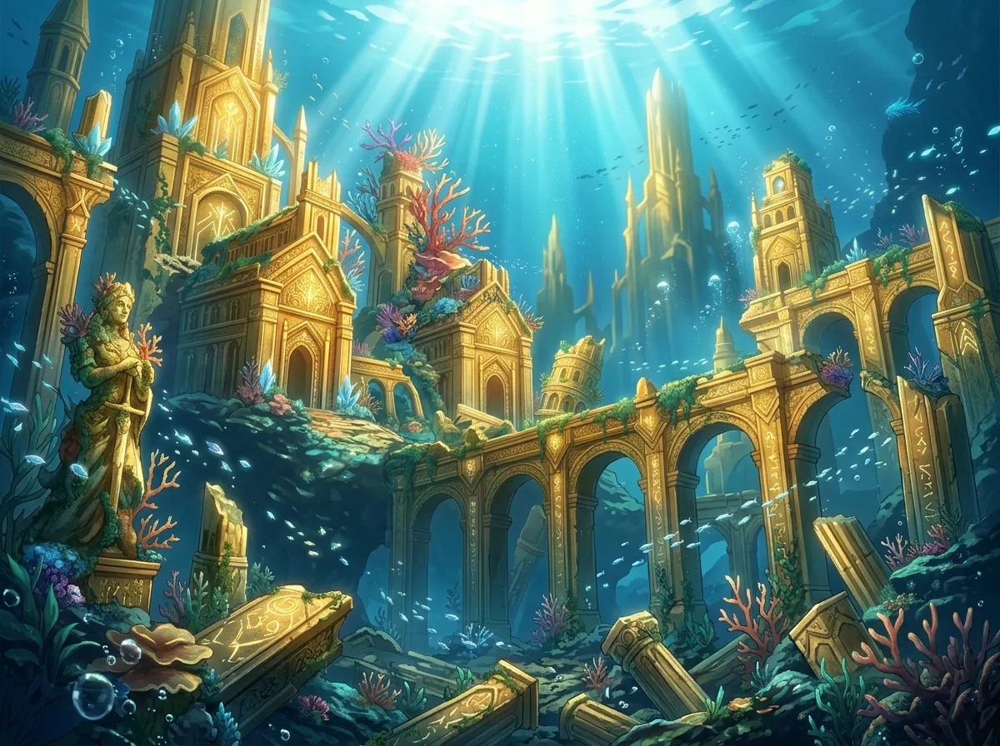
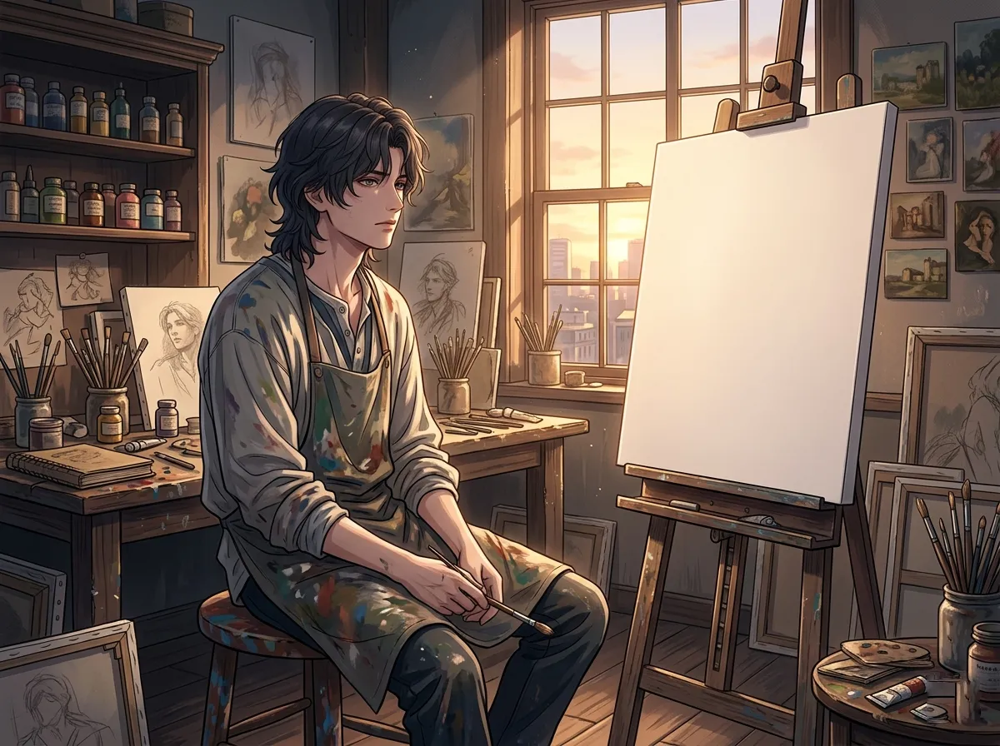
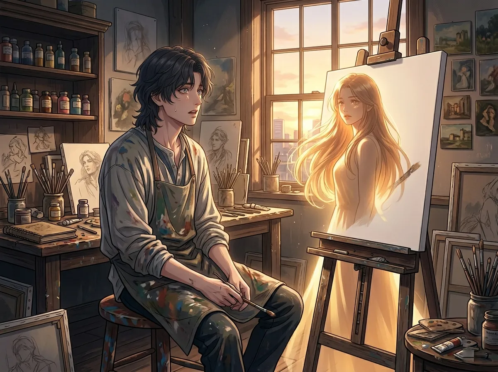
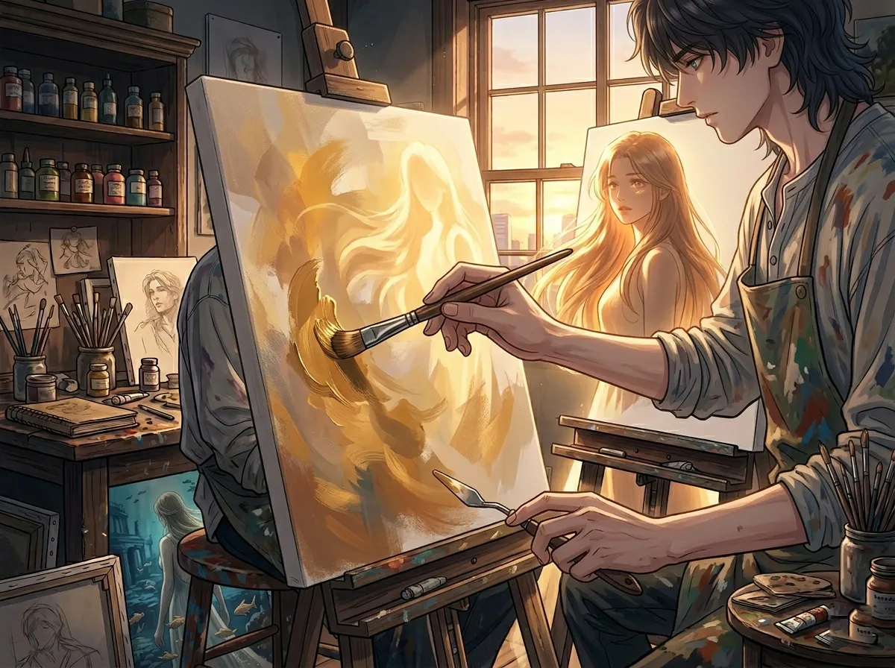
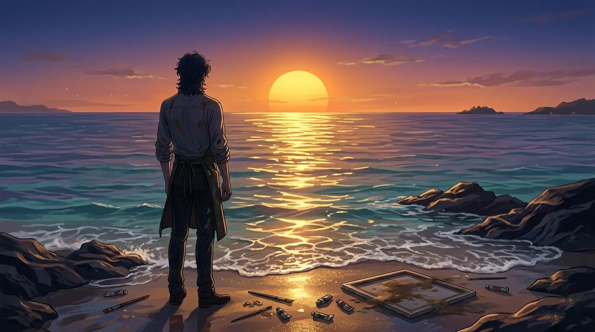

The color he lost. The color he keeps trying to find.
He paints the sea every day. He has painted it a thousand times. A thousand variations of the same blue. The same waves. The same horizon.
But he is not painting the sea.
He is painting the memory of a color. A gold he saw once. A gold that existed beneath the water. A gold that belonged to a kingdom that no longer exists.
He has been trying to find that gold for a thousand years. He has never succeeded.
This is the story of that gold. And the one time he saw it again.

There was a city. Under the sea. It was gold.
Not the gold of jewelry. Not the gold of coins. Not the cold gold of things that are bought and sold.
It was the gold of sunlight filtered through water. The gold of coral catching the light. The gold of buildings that had stood for centuries, their surfaces worn smooth by the sea.
It was the color of home. The color of a kingdom that no longer exists. The color of everything he lost.
He remembers it perfectly. Every shade. Every variation. Every moment when the light shifted and the gold changed.
He remembers it so clearly that he cannot paint it.
He remembers it too clearly. That's the problem. The gold in his memory is perfect. It is complete. It is untouchable.
Every time he tries to paint it, it comes out wrong. Too yellow. Too brown. Too bright. Too dull. Always wrong.
He is not painting the gold. He is painting the memory of the gold. And the memory is more real than anything he can put on canvas.
He will keep trying. He will never succeed. He knows this. He does it anyway.

He sees the gold in his dreams. He sees it when he closes his eyes. He sees it in the space between one breath and the next.
It is always there. The gold beneath the sea. The gold of his lost kingdom. The gold of everything he can never get back.
He has tried to paint it from memory. He has tried to paint it from imagination. He has tried every technique. Every combination. Every shade.
Nothing works.
Because the gold he remembers is not a color. It is a feeling. It is the feeling of being home. The feeling of belonging. The feeling of having a place in the world.
You cannot paint a feeling. You can try. He tries. He will always try.
He remembers the gold. He remembers it perfectly. But he cannot recreate it. Because what he remembers is not the color itself. It is what the color meant.
It meant home. It meant safety. It meant a kingdom that loved him.
He cannot paint that. He cannot find that color again. Because the color doesn't exist anymore. Only the memory of it.
He will spend the rest of his life trying to find it. He will never succeed. That is the tragedy. That is the art.

And then he saw her.
It was not underwater. It was not a kingdom. It was a moment. A single moment. Sunlight falling on her face. Her hair catching the light. A gold he had not seen in a thousand years.
He stopped. He couldn't breathe. He couldn't move. He couldn't do anything except stare.
It was the gold. The gold from his memory. The gold from his dreams. The gold from the city beneath the sea.
It was there. In her. In the way the light touched her. In the way she looked in the sunlight. In the way she was real.
He didn't say anything. He never says anything. But he saw it. He saw the gold again. For the first time in a thousand years.
He thought he had lost the gold forever. He thought it was gone. He thought he would spend the rest of his life trying to find a color that no longer existed.
Then he saw her. And the gold was there. In her. In the sunlight. In the way she was real.
He didn't know what to do with that. He still doesn't. He is afraid of what it means. He is afraid of what it could mean.
But he saw it. The gold. The color he lost. The color he never thought he would see again.

He paints her now.
Not her face. Not her eyes. Not anything that would give it away. He paints the gold. The gold he saw in her. The gold he thought he had lost forever.
He paints it over and over. Every day. Every night. Every time he thinks he has found the right shade.
He never does. But he keeps trying. Because painting the gold is the closest he can get to keeping her. To keeping the moment. To keeping the color that he thought was gone forever.
He doesn't show anyone the paintings. He doesn't tell anyone what they are. He keeps them hidden. Stacked in a corner of his studio. Where no one can see them.
They are his. His only. The gold he found again. The gold he will never let go.
He paints her. Not her face. The gold he saw in her. The gold he thought was lost forever.
He doesn't show the paintings to anyone. He doesn't tell anyone what they are. He keeps them hidden. His only. His private.
Because if he shows them, he has to explain. And if he explains, he has to admit that he saw the gold again. And if he admits that, he has to admit what it means.
He is not ready. He may never be ready. But he paints. Every day. The gold. The only color that matters.

The sea changed. The gold changed. He changed too.
He is not the prince who lost a kingdom. He is not the boy who stood on the shore and watched his home disappear.
He is older. He is different. He has lived in the world above the water for a thousand years.
The gold he remembers is not the gold he seeks. It is the gold of memory. The gold of loss. The gold of a kingdom that no longer exists.
But there is new gold now. The gold he found in her. The gold he never expected to find. The gold that belongs to the world he lives in now.
He doesn't know how to let go of the old gold. He doesn't know how to hold onto the new gold. He is caught between two colors, two worlds, two lives.
He will keep painting. He will keep searching. He will keep trying to find the gold that lives in the space between memory and reality.
The gold he remembers never existed. Not the way he remembers it. It was always more beautiful in memory than it was in reality. It was always more golden.
He knows this. He has always known this. But he cannot stop looking for it. He cannot stop painting it. He cannot stop wanting to find it.
Because if he stops, he has to admit that he is not looking for a color. He is looking for a home. A home that no longer exists. A home he will never find.
She is not that home. She is something else. Something new. Something he does not have a name for. Something that might be more important than the gold he lost.
He doesn't know how to let go. He doesn't know how to hold on. He is trying. He is painting. He is waiting.
Rafayel lost a kingdom. He lost a color. He lost a home.
He has been trying to find the gold for a thousand years. He has never succeeded.
But he found something else. Something he didn't expect. A new gold. A different gold. A gold that belongs to the world he lives in now.
He doesn't know what to do with it. He doesn't know how to hold onto it. He is afraid of losing it the way he lost everything else.
But he is painting. He is trying. He is hoping.
The gold he lost is gone. The gold he found is here. He just has to learn how to see it.